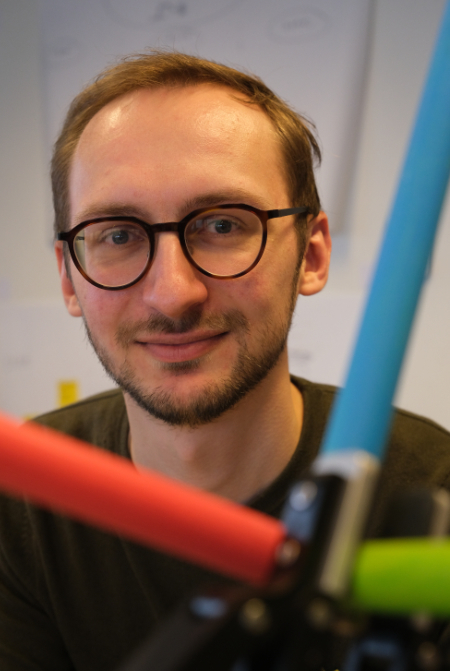

Hi! I'm Mathieu. I'm a postdoc at IDLab-AIRO (Ghent University - imec), where I work on intelligent robotic manipulation. I build perception for robots that handle everyday objects, such as transparent glassware for robotic bartending. I also co-supervise PhD students working on robotic manipulation and navigation.
I obtained my PhD from Ghent University in 2024. My research focused on sign language recognition and translation and it has led to several high impact publications and a follow-up valorisation project.
I'm available for talks on the topics of AI and robotics! Contact me if you would like to know more.
In my free time, I enjoy graphics programming, hiking, photography, playing the piano and cooking.
Please have a look around! On my website, you'll find an overview of my scientific publications, as well as my occasionally updated blog and a selection of projects I've worked on. Want to get in touch? You'll find my contact details on here too.